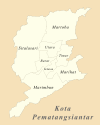
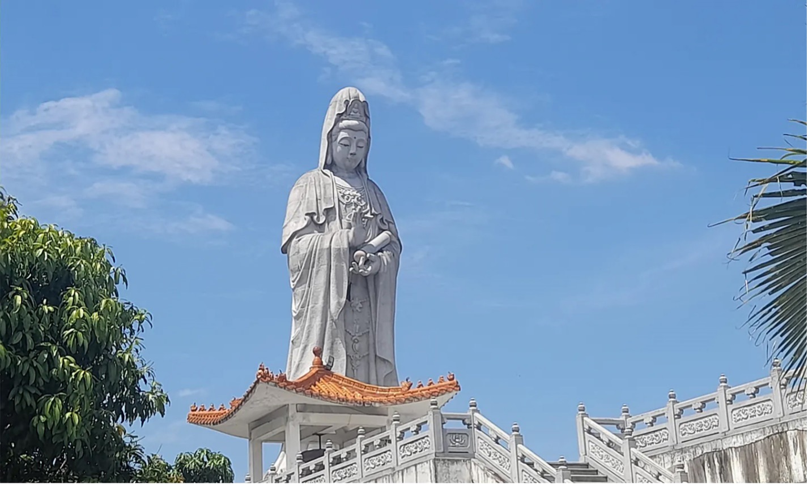
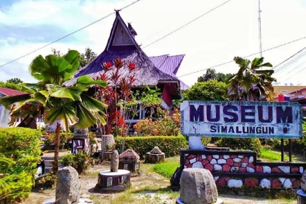

Sejarah

Sebelum Proklamasi Kemerdekaan Republik Indonesia, Pematangsiantar merupakan daerah kerajaan. Pematangsiantar yang berkedudukan di Pulau Holing dan raja terakhir dari dinasti ini adalah keturunan marga Damanik yaitu Tuan Sang Nawaluh Damanik yang memegang kekuasaan sebagai raja tahun 1906.
Geografis

Kota Pematangsiantar terletak pada garis 2° 53' 20”-3° 01' 00” Lintang Utara dan 99° 1'00”-99° 6' 35” Bujur Timur, dan merupakan enklave wilayah Kabupaten Simalungun.
Kota Pematangsiantar berupa daratan seluas 79,971 km2 yang berada pada ketinggian antara 400-500 meter di atas permukaan laut. Berdasarkan luas wilayah menurut kecamatan, kecamatan yang terluas adalah kecamatan Siantar Sitalasari dengan luas wilayah 22,723 km² atau sama dengan 28,41% dari total luas wilayah Kota Pematangsiantar.
Wisata
Liburan sangat penting untuk melepas penat agar terhindar dari stres. Sebelum pergi liburan, tentunya harus lebih dahulu menentukan tempat wisata yang akan didatangi serta mengetahui lokasi, jam buka, harga tiket masuk, dan fasilitasnya.
Nah, bagi yang bingung mau jalan-jalan kemana, tenang saja ada beberapa tempat wisata yang harus dikunjungi pas weekend atau liburan di Pematangsiantar.
Patung Dewi Kwan Im

Patung Dewi Kwan Im merupakan salah satu patung tertingggi bagi agama Budha di Asia Tenggara. Berlokasi di Jalan Pusuk Buhit Kota Pematangsiantar.
Museum Simalungun

Museum Simalungun merupakan salah satu wisata sejarah yang dapat dijadikan alternatif untuk rekreasi. Berlokasi di Jl. Sudirman, Pematangsiantar.